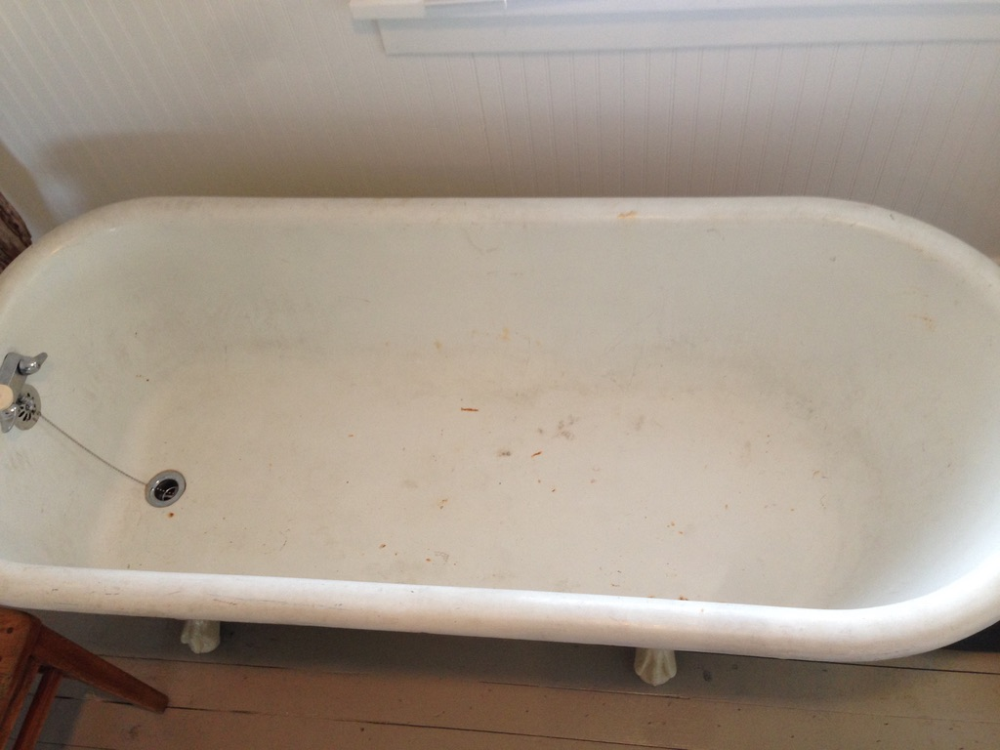
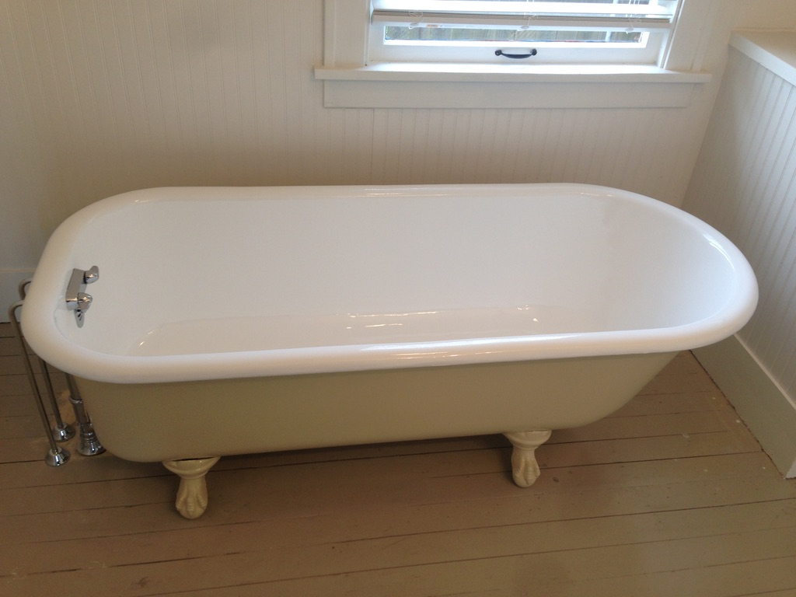
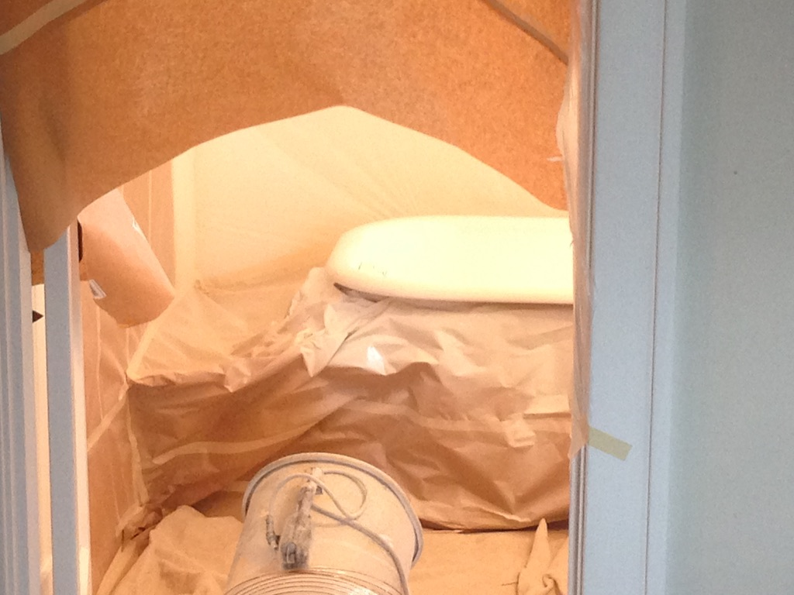

I bought my first house when I was 24 in Bremerton, WA. The thing that made me buy it was the bathtub, it was a porcelain enameled cast iron tub. It was beautiful and was not in the best shape, the porcelain was chipped on the inside of the tub exposing cast iron for rusting. To prevent it from further damage I didn't use it until I could get it re-enameled. Below is a before and after of the tub.
Before:
After:
The process of restoring the tub was farely inexpensive if you consider the trouble of removing and replacing with a new tub and the new cost of the tub. It was a bit pricy though for a 24 yr old. It was around $680. The company that did the repair came to the house and did the restoration in a few hours on site without having to disconnect any plumbing. Below is a picture of the set up during the restoration.
During:
As you can see by the during picture, it was quite a process for set up. He had to tape and cover up all of the surfaces of the bathroom and he had to direct airflow from the main portion of the house through the bathroom and out the bathroom window. This was because of the harsh chemicals used to dissolve the previous enamel and because of the process of spraying the new enamel onto the bare metal surface of the tub.